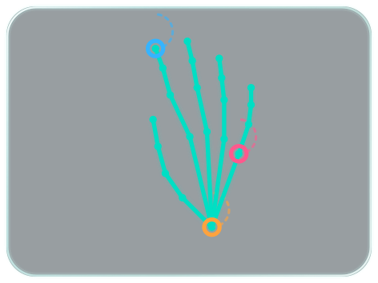

First prototype
- Local Apple Vision tracking, with menu bar controls.
- A full turn changes volume by 5 percentage points.
- Palm-to-fist pauses; thumbs-up plays; side-palm swipes skip.
Oct 14, 2026 · Archive date
A HAND GESTURE EXPERIMENT
A little movement.
A new way to control your Mac.
From the first working gestures to a floating hand display. A visual record of versions 0.1.0–0.2.3.

01 Move your hand
02 Read the gesture
03 Control volume & media
THE DEVELOPMENT JOURNAL
14 builds, in order.
One clear change at a time.
From a full turn to continuous control.
Oct 14, 2026 · Archive date
Oct 14, 2026 · Archive date
Oct 14, 2026 · Archive date
Oct 14, 2026 · Archive date
Oct 14, 2026 · Archive date
Oct 14, 2026 · Archive date
Oct 14, 2026 · Archive date
Oct 14, 2026 · Archive date
Oct 14, 2026 · Archive date
Oct 15, 2026 · Archive date
New tracking. More visible feedback.
Oct 20, 2026 · Archive date
Oct 20, 2026 · Archive date
Oct 20, 2026 · Archive date
Oct 20, 2026 · Archive date
THE FINAL DOCUMENTED BUILD
Hand movement prepares volume in 0.6 seconds. An accepted circle starts control. A fist can still pause while volume is only ready.
About 1 percentage point per 45°.
Clockwise up. Counterclockwise down.
0.25 seconds.
Hand movement is allowed.
Hold for 0.5 seconds.
One action per hold.
Right for next. Left for previous.
Media actions share a 1-second cooldown.
Volume control blocks fist/thumb commands while active; Pause stays protected for 2 seconds after the last accepted circle.
SEE IT IN ACTION
Original recording
00:43 · IMG_7785.mp4
This journal ends at 0.2.3, treated as the final version for this project. The surviving 0.2.0 build is the MediaPipe experiment.
Every version has source evidence. No early screenshots were found, so versions 0.1.0–0.2.0 use new source-based diagrams. Versions 0.2.1–0.2.3 use archived HUD renders with test hand points. The 0.2.2 and 0.2.3 renders are identical.
Dates follow local archive files. The final build targets Apple Silicon and macOS 13+. Player routing and full-screen overlay behavior still have limits in the source notes.
View the source index and file checksums ↗